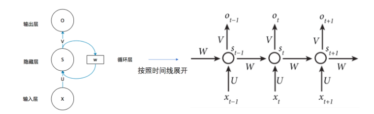
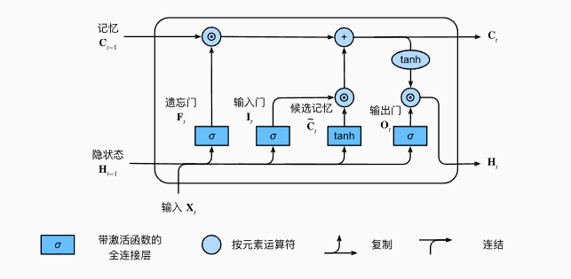
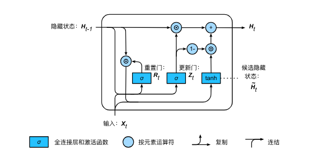

实验任务二: RNN、LSTM和GRU文本生成任务¶
1. 文本预处理¶
文本预处理简介
文本预处理是在深度学习和自然语言处理（NLP）任务中，对原始文本进行清理、转换和格式化，使其能够被模型理解和处理的过程。
预处理的必要性
原始文本可能包含噪声，且文本长度不一致，导致批量训练时需要填充
AG News 数据集简介
AG News 数据集来源于 AG's corpus of news articles，是一个大型的新闻数据集，由 Antonio Gulli 从多个新闻网站收集整理。 AG News 数据集包含 4 类新闻，每类 30,000 条训练数据，共 120,000 条训练样本 和 7,600 条测试样本。
首先导入所需模块：
可能需要先安装datasets包
import torch
import torch.nn as nn
import torch.optim as optim
from datasets import load_dataset, load_from_disk
from collections import Counter
from torch.nn.utils.rnn import pad_sequence
import torch.nn.functional as F
from tqdm import tqdm
import os
我们从AG News 数据集中加载文本。 这是一个较小的语料库，有150000多个单词，但足够我们小试牛刀.
data_path = "ag_news文件夹保存路径"
dataset = load_from_disk(data_path)
# 提取所有文本数据
train_text = [item['text'] for item in dataset['train']]
device = torch.device("cuda" if torch.cuda.is_available() else "cpu")
词元化 下面的tokenize函数将文本行列表（lines）作为输入， 列表中的每个元素是一个文本序列（如一条文本行）。 每个文本序列又被拆分成一个词元列表，词元（token）是文本的基本单位。 最后，返回一个由词元列表组成的列表，其中的每个词元都是一个字符串（string）。
# 使用 split 进行分词
def tokenize(text):
return text.lower().split()
# 生成词汇表
counter = Counter()
for text in train_text:
counter.update(tokenize(text))
词元的类型是字符串，而模型需要的输入是数字，因此这种类型不方便模型使用。 现在，让我们构建一个字典，通常也叫做词表（vocabulary）， 用来将字符串类型的词元映射到从0开始的数字索引中。
首先，定义特殊标记（如
# 生成词汇表，包含特殊 token
special_tokens = ["<unk>", "<pad>", "<bos>", "<eos>"]
vocab = special_tokens + [word for word, _ in counter.most_common()]
vocab_dict = {word: idx for idx, word in enumerate(vocab)}
打印词汇表大小，前10个高频词元及其索引。
思考题
思考题1：在文本处理中，为什么需要对文本进行分词（Tokenization）？
思考题2：在深度学习中，为什么不能直接使用单词而需要将其转换为索引？
2. RNN文本生成实验¶
RNN文本生成概述
使用RNN进行文本生成任务的核心思想是 根据前面的文本预测下一个单词，然后将预测出的单词作为输入，循环迭代生成完整文本。本实验以AG News 数据为例，给定前100个单词作为输入，预测下一个单词，实现文本生成任务。
RNN的局限性
RNN的局限性在于难以记住长距离上下文，容易导致生成内容缺乏连贯性，且可能出现重复或模式化的文本。

前置代码¶
首先导入所需模块：
import torch
import torch.nn as nn
import torch.optim as optim
from datasets import load_dataset, load_from_disk
from collections import Counter
from torch.nn.utils.rnn import pad_sequence
import torch.nn.functional as F
from tqdm import tqdm
import os
读取数据集
data_path = "ag_news文件夹保存路径"
dataset = load_from_disk(data_path)
# 提取所有文本数据
train_text = [item['text'] for item in dataset['train']]
device = torch.device("cuda" if torch.cuda.is_available() else "cpu")
文本的预处理
# 使用 split 进行分词
def tokenize(text):
return text.lower().split()
# 生成词汇表
counter = Counter()
for text in train_text:
counter.update(tokenize(text))
# 生成词汇表，包含特殊 token
special_tokens = ["<unk>", "<pad>", "<bos>", "<eos>"]
vocab = special_tokens + [word for word, _ in counter.most_common()]
vocab_dict = {word: idx for idx, word in enumerate(vocab)}
训练数据生成¶
将文本数据转换为数值表示，并按100个单词作为输入、下一个单词作为目标的方式构造训练数据。最终生成 X_train（输入序列）和 Y_train（预测目标），用于 RNN 训练文本生成模型。
def numericalize(text):
return torch.tensor([vocab_dict.get(word, vocab_dict["<unk>"]) for word in tokenize(text)], dtype=torch.long)
# 生成训练数据（输入 100 个词，预测下一个词）
def create_data(text_list, seq_len=100):
X, Y = [], []
for text in text_list:
token_ids = numericalize(text)
if len(token_ids) <= seq_len:
continue # 忽略过短的文本
for i in range(len(token_ids) - seq_len):
X.append(token_ids[i:i + seq_len])
Y.append(token_ids[i + seq_len])
return torch.stack(X), torch.tensor(Y)
# 生成训练数据
X_train, Y_train = create_data(train_text, seq_len=100)
# 创建 DataLoader
batch_size = 32
train_data = torch.utils.data.TensorDataset(X_train, Y_train)
train_loader = torch.utils.data.DataLoader(train_data, batch_size=batch_size, shuffle=True)
思考题
思考题3：如果不打乱训练集，会对生成任务有什么影响？
RNN 模型构建¶
实现了一个基于 RNN 的文本生成模型，通过输入文本序列预测下一个单词。
class RNNTextGenerator(nn.Module):
def __init__(self, vocab_size, embed_dim, hidden_dim, num_layers=2):
super(RNNTextGenerator, self).__init__()
self.embedding = nn.Embedding(vocab_size, embed_dim)#将输入的单词索引转换为 embed_dim 维的向量。
self.rnn = nn.RNN(embed_dim, hidden_dim, num_layers=num_layers, batch_first=True)#构建一个 RNN 层，用于处理序列数据。
self.fc = nn.Linear(hidden_dim, vocab_size)#将 RNN 隐藏状态 映射到 词汇表大小的向量，用于预测下一个单词的概率分布。
def forward(self, x, hidden=None):
#输入 x 形状：(batch_size, seq_len)
#输出 embedded 形状：(batch_size, seq_len, embed_dim)
embedded = self.embedding(x)
#输入 embedded 形状：(batch_size, seq_len, embed_dim)
#输出 output 形状：(batch_size, seq_len, hidden_dim)（所有时间步的隐藏状态）
#输出 hidden 形状：(num_layers, batch_size, hidden_dim)（最后一个时间步的隐藏状态）
output, hidden = self.rnn(embedded, hidden)
#只取 最后一个时间步的隐藏状态 output[:, -1, :] 作为输入
#通过全连接层 self.fc 将隐藏状态转换为词汇表大小的分布（用于预测下一个单词）
#最终 output 形状：(batch_size, vocab_size)
output = self.fc(output[:, -1, :])
return output, hidden
定义模型所需参数、实例化模型、损失函数和优化器
embed_dim = 128
hidden_dim = 512
vocab_size = len(vocab)
model = RNNTextGenerator(vocab_size, embed_dim, hidden_dim, num_layers=2).to(device)
criterion = nn.CrossEntropyLoss()
optimizer = optim.Adam(model.parameters(), lr=0.001)
RNN 模型训练¶
RNN 训练过程
def train_model(model, train_loader, epochs=5):
model.train()# 将模型设置为训练模式
for epoch in range(epochs):
total_loss = 0
progress_bar = tqdm(train_loader, desc=f"Epoch {epoch + 1}/{epochs}")# 使用 tqdm 创建进度条
epoch_grad_norm = None
for X_batch, Y_batch in progress_bar:
X_batch, Y_batch = X_batch.to(device), Y_batch.to(device)# 将数据移动到指定设备（GPU/CPU）
optimizer.zero_grad()# 清空上一轮的梯度，防止梯度累积
output, _ = model(X_batch)# 前向传播，计算模型输出
loss = criterion(output, Y_batch) # 计算损失函数值
loss.backward()# 反向传播，计算梯度
optimizer.step() # 更新模型参数
total_loss += loss.item()# 累加当前 batch 的损失值
progress_bar.set_postfix(loss=loss.item())# 在进度条上显示当前 batch 的损失值
print(f"Epoch {epoch + 1}, Avg Loss: {total_loss / len(train_loader):.4f}")
# 计算并输出本轮训练的平均损失
# 训练模型
train_model(model, train_loader, epochs=20)
RNN 模型测试¶
RNN 生成文本测试
def generate_text(model, start_text, num_words=100, temperature=1.0):
model.eval()# 将模型设置为评估模式，禁用 dropout 和 batch normalization
words = tokenize(start_text)# 对输入文本进行分词，获取初始词列表
input_seq = numericalize(start_text).unsqueeze(0).to(device)
# 将文本转换为数值表示，并调整形状以符合模型输入格式（增加 batch 维度），再移动到指定设备（CPU/GPU）
hidden = None
for _ in range(num_words): # 生成 num_words 个单词
with torch.no_grad(): # 在推理时关闭梯度计算，提高效率
output, hidden = model(input_seq, hidden)# 前向传播，获取模型输出和新的隐藏状态
# 计算 softmax，并应用温度系数
logits = output.squeeze(0) / temperature # 对 logits 除以 temperature 调节概率分布的平滑度
probs = F.softmax(logits, dim=-1) # 计算 softmax 得到概率分布
# 采样新词
predicted_id = torch.multinomial(probs, num_samples=1).item()
# 基于概率分布 随机采样一个词的索引
next_word = vocab[predicted_id] # 从词表中查找对应的单词
words.append(next_word)# 将生成的单词添加到文本列表中
# 更新输入序列（将新词加入，并移除最旧的词，维持输入长度）
input_seq = torch.cat([input_seq[:, 1:], torch.tensor([[predicted_id]], dtype=torch.long, device=device)],
dim=1)
return " ".join(words)
# 生成文本
print("\nGenerated Text:")
test_text = dataset["test"][1]["text"]
# 取前 100 个单词作为前缀
test_prefix = " ".join(test_text.split()[:100])
# 让模型基于该前缀生成 100 个词
generated_text = generate_text(model, test_prefix, 100, temperature=0.8)
print("\n🔹 模型生成的文本：\n")
print(generated_text)
困惑度评估¶
1. 基本概念 困惑度（Perplexity, PPL）是衡量语言模型好坏的一个常见指标，它表示模型对测试数据的不确定性，即模型在预测下一个词时的困惑程度。 如果一个模型的困惑度越低，说明它对数据的预测越准确，即更“确信”自己生成的词语；如果困惑度高，说明模型的预测不太确定，可能在多个词之间摇摆不定。
2. 数学定义
假设一个句子由\(N\)个单词组成：
模型给出的概率为：
那么，困惑度（Perplexity, PPL）定义为：
或者等价地：
其中： - \(P(w_i | w_1, ..., w_{i-1})\) 是模型在给定前 \(i-1\) 个单词时预测 \(w_i\) 的概率 - \(N\) 是句子的单词总数
困惑度的最好的理解是“下一个词元的实际选择数的调和平均数”。
-
在最好的情况下，模型总是完美地估计标签词元的概率为1。 在这种情况下，模型的困惑度为1。
-
在最坏的情况下，模型总是预测标签词元的概率为0。 在这种情况下，困惑度是正无穷大。
下面请你按照要求补全计算困惑度的代码
def compute_perplexity(model, test_text, vocab_dict, seq_len=100):
"""
计算给定文本的困惑度（Perplexity, PPL）
:param model: 训练好的语言模型（RNN/LSTM）
:param test_text: 需要评估的文本
:param vocab_dict: 词汇表（用于转换文本到索引）
:param seq_len: 评估时的窗口大小
:return: PPL 困惑度
"""
model.eval() # 设为评估模式
words = test_text.lower().split()
# 将文本转换为 token ID，如果词不在词表中，则使用 "<unk>"（未知词）对应的索引
token_ids = torch.tensor([vocab_dict.get(word, vocab_dict["<unk>"]) for word in words], dtype=torch.long)
# 计算 PPL
total_log_prob = 0
num_tokens = len(token_ids) - 1 # 预测 num_tokens 次
with torch.no_grad():
for i in range(num_tokens):
"""遍历文本的每个 token，计算其条件概率，最后累加log概率"""
input_seq = token_ids[max(0, i - seq_len):i].unsqueeze(0).to(device) # 获取前 seq_len 个单词
if input_seq.shape[1] == 0: # 避免 RNN 输入空序列
continue
target_word = token_ids[i].unsqueeze(0).to(device) # 目标单词
# TODO: 前向传播，预测下一个单词的 logits
# TODO: 计算 softmax 并取 log 概率
# TODO: 取目标词的对数概率
# TODO: 累加 log 概率
avg_log_prob = total_log_prob / num_tokens # 计算平均 log 概率
perplexity = torch.exp(torch.tensor(-avg_log_prob)) # 计算 PPL，公式 PPL = exp(-avg_log_prob)
return perplexity.item()
# 示例用法
ppl = compute_perplexity(model, generated_text, vocab_dict)
print(f"Perplexity (PPL): {ppl:.4f}")
思考题
思考题4：假设你在RNN和LSTM语言模型上分别计算了困惑度，发现RNN的PPL更低。这是否意味着RNN生成的文本一定更流畅自然？如果不是，在什么情况下这两个困惑度可以直接比较？
思考题5：困惑度是不是越低越好？
3. LSTM和GRU文本生成实验¶
LSTM文本生成概述
LSTM（Long Short-Term Memory）是一种改进的 RNN，能够通过 门控机制（遗忘门、输入门、输出门） 有效捕捉长期依赖关系，防止梯度消失和梯度爆炸问题，使其在处理长序列任务时比普通 RNN 更强大。 本实验依旧以AG News 数据为例，给定前100个单词作为输入，预测下一个单词，实现文本生成任务。

文本的预处理 训练数据生成与前面一致
LSTM 模型构建¶
实现了一个基于 LSTM 的文本生成模型，通过输入文本序列预测下一个单词。
class LSTMTextGenerator(nn.Module):
def __init__(self, vocab_size, embed_dim, hidden_dim, num_layers=2):
super(LSTMTextGenerator, self).__init__()
self.embedding = nn.Embedding(vocab_size, embed_dim)
self.lstm = nn.LSTM(embed_dim, hidden_dim, num_layers=num_layers, batch_first=True)
self.fc = nn.Linear(hidden_dim, vocab_size)
def forward(self, x, hidden=None):
embedded = self.embedding(x) # (B, L, embed_dim)
output, hidden = self.lstm(embedded, hidden) # (B, L, hidden_dim)
output = self.fc(output[:, -1, :]) # 只取最后一个时间步的输出进行预测
return output, hidden
定义模型所需参数、实例化模型、损失函数和优化器
embed_dim = 128
hidden_dim = 512
vocab_size = len(vocab)
model = LSTMTextGenerator(vocab_size, embed_dim, hidden_dim, num_layers=2).to(device)
criterion = nn.CrossEntropyLoss()
optimizer = optim.Adam(model.parameters(), lr=0.001)
LSTM 模型训练¶
LSTM 训练过程
def train_model(model, train_loader, epochs=5):
model.train()
for epoch in range(epochs):
total_loss = 0
progress_bar = tqdm(train_loader, desc=f"Epoch {epoch + 1}/{epochs}")
epoch_grad_norm = None
for X_batch, Y_batch in progress_bar:
X_batch, Y_batch = X_batch.to(device), Y_batch.to(device)
optimizer.zero_grad()
output, _ = model(X_batch)
loss = criterion(output, Y_batch)
loss.backward()
optimizer.step()
total_loss += loss.item()
progress_bar.set_postfix(loss=loss.item())
print(f"Epoch {epoch + 1}, Avg Loss: {total_loss / len(train_loader):.4f}")
# 训练模型
train_model(model, train_loader, epochs=20)
LSTM 模型测试¶
LSTM 生成文本测试
def generate_text(model, start_text, num_words=100, temperature=1.0):
model.eval()
words = tokenize(start_text)
input_seq = numericalize(start_text).unsqueeze(0).to(device)
hidden = None
for _ in range(num_words):
with torch.no_grad():
output, hidden = model(input_seq, hidden)
# 计算 softmax，并应用温度系数
logits = output.squeeze(0) / temperature
probs = F.softmax(logits, dim=-1)
# 采样新词
predicted_id = torch.multinomial(probs, num_samples=1).item()
next_word = vocab[predicted_id]
words.append(next_word)
input_seq = torch.cat([input_seq[:, 1:], torch.tensor([[predicted_id]], dtype=torch.long, device=device)],
dim=1)
return " ".join(words)
# 生成文本
print("\nGenerated Text:")
test_text = dataset["test"][1]["text"]
# 取前 100 个单词作为前缀
test_prefix = " ".join(test_text.split()[:100])
# 让模型基于该前缀生成 100 个词
generated_text = generate_text(model, test_prefix, 100, temperature=0.8)
print("\n🔹 模型生成的文本：\n")
print(generated_text)
借助RNN文本生成任务中计算困惑度的函数，计算一下lstm在generated_text上的困惑度。
思考题
思考题6：观察一下RNN和LSTM训练过程中loss的变化，并分析一下造成这种现象的原因。
GRU文本生成概述
GRU（Gated Recurrent Unit）是 LSTM 的简化版本，使用 更新门（Update Gate）和重置门（Reset Gate） 来控制信息流动，计算效率更高，且能在许多任务中取得与 LSTM 相似的效果，同时减少计算成本和参数量。 本实验依旧以AG News 数据为例，给定前100个单词作为输入，预测下一个单词，实现文本生成任务。

文本的预处理 训练数据生成与前面一致
GRU 模型构建¶
实现了一个基于 GRU 的文本生成模型，通过输入文本序列预测下一个单词。
class GRUTextGenerator(nn.Module):
def __init__(self, vocab_size, embed_dim, hidden_dim, num_layers=2):
super(GRUTextGenerator, self).__init__()
self.embedding = nn.Embedding(vocab_size, embed_dim)
self.gru = nn.GRU(embed_dim, hidden_dim, num_layers=num_layers, batch_first=True)
self.fc = nn.Linear(hidden_dim, vocab_size)
def forward(self, x, hidden=None):
embedded = self.embedding(x) # (B, L, embed_dim)
output, hidden = self.gru(embedded, hidden) # (B, L, hidden_dim)
output = self.fc(output[:, -1, :]) # 只取最后一个时间步的输出进行预测
return output, hidden
定义模型所需参数、实例化模型、损失函数和优化器
embed_dim = 128
hidden_dim = 512
vocab_size = len(vocab)
model = GRUTextGenerator(vocab_size, embed_dim, hidden_dim, num_layers=2).to(device)
criterion = nn.CrossEntropyLoss()
optimizer = optim.Adam(model.parameters(), lr=0.001)
GRU 模型训练¶
GRU 训练过程也与LSTM保持一致
GRU 模型测试¶
GRU 生成文本测试
def generate_text(model, start_text, num_words=100, temperature=1.0):
model.eval()
words = tokenize(start_text)
input_seq = numericalize(start_text).unsqueeze(0).to(device)
hidden = None
for _ in range(num_words):
with torch.no_grad():
output, hidden = model(input_seq, hidden)
# 计算 softmax，并应用温度系数
logits = output.squeeze(0) / temperature
probs = F.softmax(logits, dim=-1)
# 采样新词
predicted_id = torch.multinomial(probs, num_samples=1).item()
next_word = vocab[predicted_id]
words.append(next_word)
input_seq = torch.cat([input_seq[:, 1:], torch.tensor([[predicted_id]], dtype=torch.long, device=device)],
dim=1)
return " ".join(words)
# 生成文本
print("\nGenerated Text:")
test_text = dataset["test"][1]["text"]
# 取前 100 个单词作为前缀
test_prefix = " ".join(test_text.split()[:100])
# 让模型基于该前缀生成 100 个词
generated_text = generate_text(model, test_prefix, 100, temperature=0.8)
print("\n🔹 模型生成的文本：\n")
print(generated_text)
借助RNN文本生成任务中计算困惑的函数，计算一下GRU在generated_text上的困惑度。
思考题
思考题7：这三个困惑度可以直接比较吗？分析一下。
思考题8：GRU 只有两个门（更新门和重置门），相比 LSTM 少了一个门控单元，这样的设计有什么优缺点？
思考题9：在低算力设备（如手机）上，RNN、LSTM 和 GRU 哪个更适合部署？为什么？
思考题10：如果就是要使用RNN模型，原先的代码还有哪里可以优化的地方？请给出修改部分代码以及实验结果。